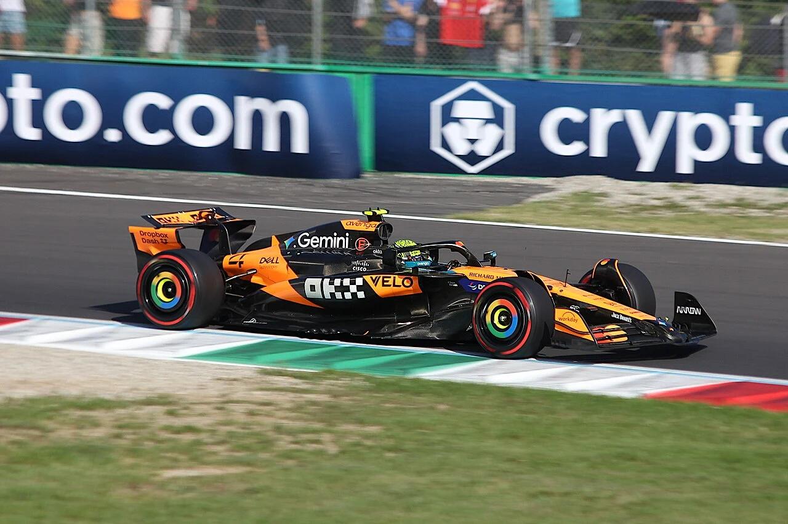
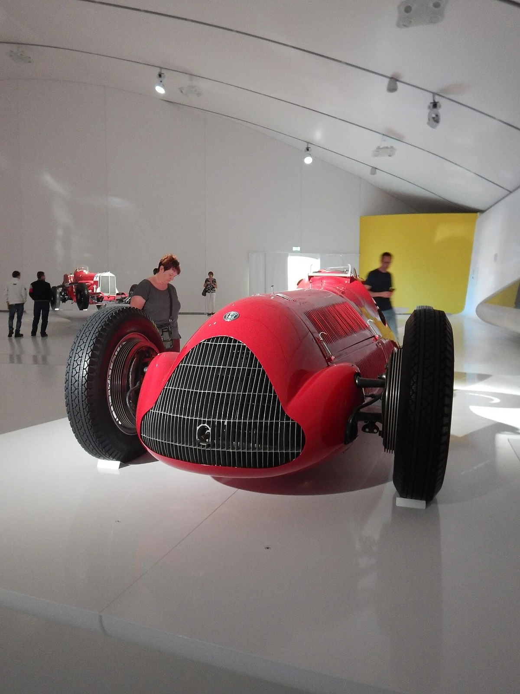
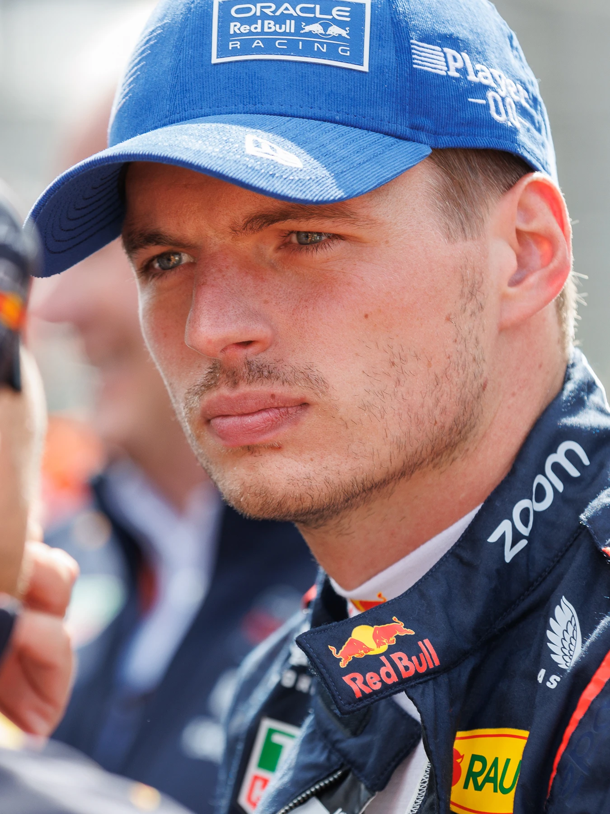
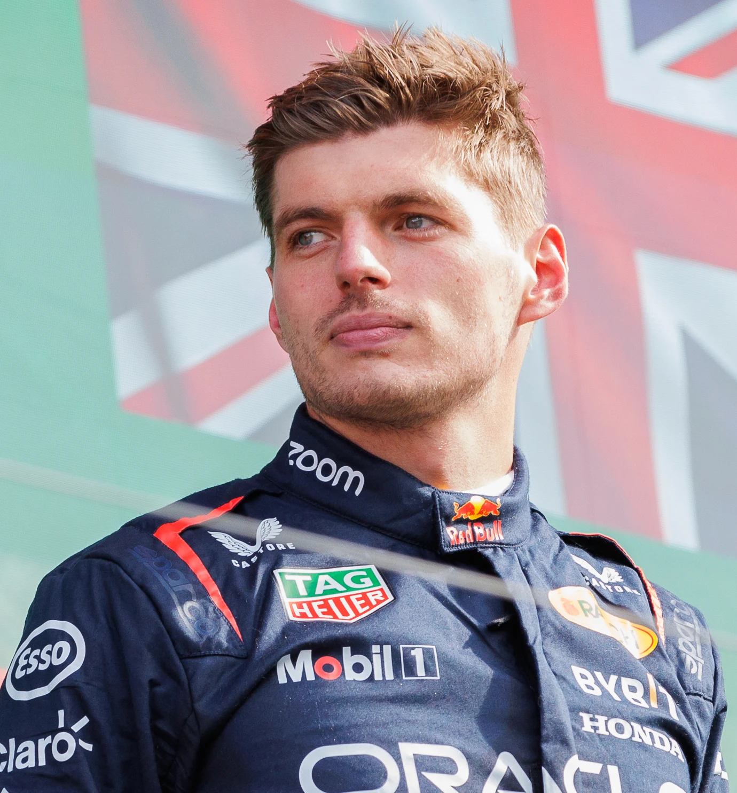
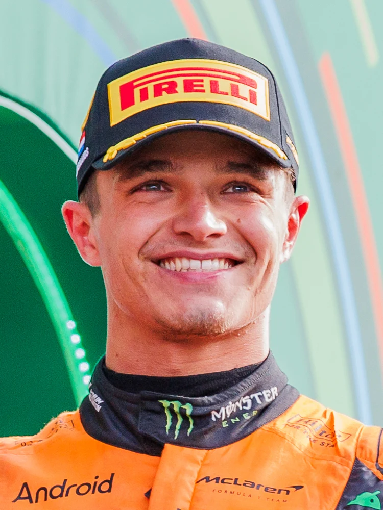

Mistrzostwa kierowców / 2023–2025
Trzej ostatni
mistrzowie świata
Formuły 1.
Talent za kierownicą. Precyzja w garażu. Historia pisana na torze. Poznaj mistrzów trzech ostatnich zakończonych sezonów — i sport, w którym sięgnęli po szczyt.
POZNAJ MISTRZÓWLando Norris / McLaren MCL39
Kwalifikacje GP Włoch, Monza 2025
Fot. Eustace Bagge · CC BY 4.0
ARCHIWUM MISTRZOWSKICH SEZONÓWTrzy sezony. Dwa nazwiska.
SEZON 2023Max Verstappen
SEZON 2024Max Verstappen
SEZON 2025Lando Norris
01 / Zanim padły rekordy
Od Silverstone
do współczesności.
Jedna dyscyplina. Pokolenia kierowców. Nieustanny wyścig ludzi, technologii i pomysłów.

Fot. thievingjoker · CC BY-SA 2.0
Wszystko zaczęło się od walki o to, kto jest najszybszy. Z czasem stało się wyścigiem o to, kto potrafi być najlepszy przez cały sezon.
Wyścigi Grand Prix mają korzenie starsze niż sama Formuła 1. Mistrzostwa świata kierowców ruszyły w 1950 roku: 13 maja na Silverstone rozegrano ich pierwszą rundę. Zwyciężył Giuseppe „Nino” Farina w Alfie Romeo, późniejszy pierwszy mistrz świata.
Od 1958 roku o własny tytuł rywalizują także konstruktorzy. Z biegiem dekad zmieniały się bolidy, aerodynamika i standardy bezpieczeństwa. Nazwiska Fangio, Senny, Schumachera czy Hamiltona stały się częścią historii tego sportu.
Dzisiejsza F1 łączy umiejętności kierowcy z pracą inżynierów i strategów. Pojedynczy wyścig daje zwycięzcę Grand Prix. Dopiero dorobek całego sezonu wyłania mistrza świata.
O mistrzostwach kierowców na Formula1.com ↗Początek mistrzostw świata
Silverstone otwiera pierwszy sezon. Tytuł zdobywa Nino Farina.
Drugi wymiar rywalizacji
Do mistrzostw kierowców dołącza klasyfikacja konstruktorów.
Kolejny rozdział historii
Dwa tytuły Verstappena, a następnie pierwszy triumf Norrisa.
02 / Ludzie, którzy sięgnęli po szczyt
Trzy sezony.
Trzy mistrzowskie historie.
Od rekordowej dominacji do finału rozstrzygniętego dwoma punktami. Chronologicznie: 2023 → 2024 → 2025.
Dlaczego Verstappen pojawia się dwukrotnie? Pokazujemy mistrza każdego z trzech ostatnich zakończonych sezonów, a nie trzech różnych kierowców. Stan na 15 października 2026 r.; trwający sezon 2026 pozostaje poza zestawieniem.

Fot. Steffen Prößdorf · CC BY-SA 4.0
Holender · Holandia
Max Verstappen
Zespół mistrzowski / Oracle Red Bull Racing
- Zwycięstwa GP
- 19
- Pole position GP
- 12
- Punkty
- 575
Sezon wyjątkowej dominacji: wygrał 19 z 22 Grand Prix, w tym dziesięć z rzędu. Ustanowił rekordy liczby zwycięstw i punktów w jednym sezonie, zdobywając trzeci kolejny tytuł mistrza świata.
Potwierdzone statystyki: Formula1.com — 2023 ↗
Fot. Steffen Prößdorf · CC BY-SA 4.0
Holender · Holandia
Max Verstappen
Zespół mistrzowski / Oracle Red Bull Racing
- Zwycięstwa GP
- 9
- Pole position GP
- 8
- Punkty
- 437
Obronił mistrzostwo mimo rosnącej presji rywali. Jednym z najważniejszych momentów było zwycięstwo w deszczowym Grand Prix São Paulo po starcie z 17. pola. Sezon zakończył z przewagą 63 punktów nad Norrisem.
Potwierdzone statystyki: Formula1.com — 2024 ↗
Fot. Steffen Prößdorf · CC BY-SA 4.0
Brytyjczyk · Wielka Brytania
Lando Norris
Zespół mistrzowski / McLaren Formula 1 Team
- Zwycięstwa GP
- 7
- Pole position GP
- 7
- Punkty
- 423
Pierwszy mistrz świata kierowców McLarena od 2008 roku. Zapewnił sobie tytuł trzecim miejscem w finałowym Grand Prix Abu Zabi, wyprzedzając Verstappena w klasyfikacji o zaledwie dwa punkty.
Potwierdzone statystyki: Formula1.com — 2025 ↗03 / Pierwszy raz w świecie F1?
Czytaj wyścig.
Rozumiej mistrzostwo.
Kilka pojęć, dzięki którym statystyki nabierają znaczenia.
Grand Prix, sprint i pole position
Grand Prix to główny wyścig weekendu. Sprint jest osobnym, krótszym wyścigiem. Pole position oznacza pierwsze pole startowe. Liczby zwycięstw i pole position na kartach dotyczą wyłącznie Grand Prix, bez sprintów.
Jak zdobywa się tytuł mistrza świata?
Liczy się końcowa klasyfikacja punktowa kierowców. Punkty podane na kartach obejmują także sprinty. Zespół przy nazwisku to ten, z którym kierowca zdobył dany tytuł. Wszystkie podane statystyki są potwierdzone, bez przybliżeń.
Źródła danych, fotografie i licencje
Wyniki: oficjalne podsumowania Formula1.com, podlinkowane przy każdej karcie. Historia: Silverstone — historia Grand Prix i Formula1.com — mistrzostwa kierowców.
Fotografie z Wikimedia Commons. Wersje lokalne pomniejszono i zapisano w WebP; kadrowanie w układzie strony odbywa się przez CSS. Zdjęcia i ich adaptacje zachowują licencje wymienione poniżej. Daty portretów opisano w podpisach. Zdjęcia przy sezonach 2023 i 2025 pochodzą z 2024 roku i ilustrują sylwetki kierowców, a nie moment zdobycia tych tytułów.
- 2024-08-25 Motorsport, Formel 1, Großer Preis der Niederlande 2024 STP 3757 by Stepro (Max Verstappen).jpg — Steffen Prößdorf / CC BY-SA 4.0.
- 2024-08-25 Motorsport, Formel 1, Großer Preis der Niederlande 2024 STP 3973 by Stepro (portrait cropped).jpg — Steffen Prößdorf / CC BY-SA 4.0.
- 2024-08-25 Motorsport, Formel 1, Großer Preis der Niederlande 2024 STP 3968 by Stepro (Lando Norris).jpg — Steffen Prößdorf / CC BY-SA 4.0.
- Lando Norris 2025 Italian Grand Prix qualifying.jpg — Eustace Bagge / CC BY 4.0.
- Alfa Romeo 158 "Alfetta" 1950 MEF.jpg — thievingjoker / CC BY-SA 2.0.
.jpg){kind=link}
.jpg){kind=link}
.jpg){kind=link}